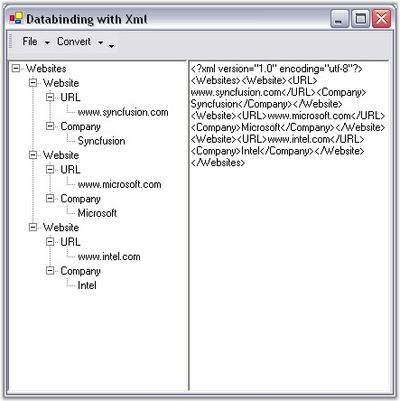

TreeViewAdv control supports databinding with hierarchical data source like xml and displays the information.
The TreeViewAdv architecture provides a way to consume information from an external XML file, DataSet objects etc and allows the user to convert the Tree to XML structure and vice versa. To implement this databinding concept in TreeViewAdv, the user should drag and drop a TreeViewAdv control, RichTextBox control and MainFrameBarManager to the form. Create bar items and handle the below click events accordingly.
|
[C#]
//Adding namespaces using System.Data; using System.Xml; using Syncfusion.Windows.Forms.Tools;
//handling the click event which Converts Tree to Xml private void Tree2XMLButton_Click(object sender, System.EventArgs e) { if ( this.tvaTreeContent.Nodes.Count > 0 ) { try { //Provides the stream to write the Xml data XmlTextWriter myXMLFileWriter = new XmlTextWriter("C:\temp.xml", null); myXMLFileWriter.WriteStartDocument();
//Helper Method AddNodes ( myXMLFileWriter , this.tvaTreeContent.Nodes ); myXMLFileWriter.Close(); //Loading the XML Data From file XmlDocument dom = new XmlDocument(); dom.Load( "C:\temp.xml" ); //creating local path //Copy the Loaded XML data to RichTextBox Control this.rtbXmlContent.Clear(); this.rtbXmlContent.Text = dom.OuterXml; } catch ( Exception Exp ) { MessageBox.Show( Exp.Message ); } } else { MessageBox.Show( "No node is available to convert as XML" ); } }
//The click event which Converts Xml to Tree private void XML2TreeButton_Click(object sender, System.EventArgs e) { this.tvaTreeContent.Nodes.Clear(); try { XmlDocument dom = new XmlDocument(); dom.InnerXml = this.rtbXmlContent.Text; // Initialize the TreeViewAdv this.tvaTreeContent.Nodes.Clear(); this.tvaTreeContent.Nodes.Add(new TreeNodeAdv(dom.DocumentElement.Name)); TreeNodeAdv tNodeAdv = new TreeNodeAdv(); tNodeAdv = this.tvaTreeContent.Nodes[0]; //Populate the TreeView with the DOM nodes. AddNode(dom.DocumentElement, tNodeAdv); //Show Expanded Tree this.tvaTreeContent.ExpandAll(); } catch(XmlException xmlEx) { MessageBox.Show(xmlEx.Message); } catch(Exception ex) { MessageBox.Show(ex.Message); } }
//Event which loads Xml private void btnLoadfrmXML_Click(object sender, System.EventArgs e) { this.ofdOpenXmlFile.ShowDialog(); }
//Event which Opens Xml private void biOpenxml_Click(object sender, System.EventArgs e) { btnLoadfrmXML_Click(sender, System.EventArgs.Empty ); }
//Accept the open Xml file private void OpenXmlFile_FileOK(object sender, System.ComponentModel.CancelEventArgs e) { try { XmlDocument dom = new XmlDocument(); dom.Load( this.ofdOpenXmlFile.FileName ); this.rtbXmlContent.Text = dom.OuterXml; } catch(XmlException xmlEx) { MessageBox.Show(xmlEx.Message); } catch(Exception ex) { MessageBox.Show(ex.Message); } } //Accept the save xml file private void SaveXmlFile_FileOK(object sender, System.ComponentModel.CancelEventArgs e) { XmlDocument dom = new XmlDocument(); dom.InnerXml = this.rtbXmlContent.Text; dom.Save( this.sfdSaveXmlFile.FileName); }
//Event which Saves Xml private void btnSavasXML_Click(object sender, System.EventArgs e) { this.sfdSaveXmlFile.ShowDialog(); }
//Event which Close Xml private void biClose_Click(object sender, System.EventArgs e) { this.Close(); } |
|
[VB.NET]
' Adding name spaces Imports System.Xml Imports Syncfusion.Windows.Forms.Tools
' The click event which Converts Tree to Xml Private Sub Tree2XMLButton_Click(ByVal sender As Object, ByVal e As System.EventArgs) Handles biTree2Xml.Click
If Me.tvaTreeContent.Nodes.Count > 0 Then Try 'Provides the stream to write the Xml data Dim myXMLFileWriter As XmlTextWriter = New XmlTextWriter("C:\temp.xml", Nothing) myXMLFileWriter.WriteStartDocument()
'Helper Method AddNodes(myXMLFileWriter, Me.tvaTreeContent.Nodes) myXMLFileWriter.Close() 'Loading the XML Data From file Dim dom As XmlDocument = New XmlDocument() dom.Load("C:\temp.xml") 'dom. 'Copy the Loaded XML data to RichTextBox Control Me.rtbXmlContent.Clear() Me.rtbXmlContent.Text = dom.OuterXml Catch Exp As Exception MessageBox.Show(Exp.Message) End Try Else MessageBox.Show("No node is available to convert as XML") End If End Sub
' The click event which Converts Xml to Tree Private Sub XML2TreeButton_Click(ByVal sender As Object, ByVal e As System.EventArgs) Handles biXml2Tree.Click Me.tvaTreeContent.Nodes.Clear()
Try Dim dom As XmlDocument = New XmlDocument() dom.InnerXml = Me.rtbXmlContent.Text ' Initialize the TreeViewAdv Me.tvaTreeContent.Nodes.Clear() Me.tvaTreeContent.Nodes.Add(New TreeNodeAdv(dom.DocumentElement.Name)) Dim tNodeAdv As TreeNodeAdv = New TreeNodeAdv() tNodeAdv = Me.tvaTreeContent.Nodes(0) 'Populate the TreeView with the DOM nodes. AddNode(dom.DocumentElement, tNodeAdv) 'Show Expanded Tree Me.tvaTreeContent.ExpandAll() Catch xmlEx As XmlException MessageBox.Show(xmlEx.Message) Catch ex As Exception MessageBox.Show(ex.Message) End Try End Sub
' Event which Load Xml Private Sub btnLoadfrmXML_Click(ByVal sender As Object, ByVal e As System.EventArgs) Handles biLoadXml.Click Me.ofdOpenXmlFile.ShowDialog() End Sub
' Event which Opens Xml Private Sub biOpenxml_Click(ByVal sender As Object, ByVal e As System.EventArgs) btnLoadfrmXML_Click(sender, System.EventArgs.Empty) End Sub
' Accept the Xml by handling this event Private Sub OpenXmlFile_FileOK(ByVal sender As Object, ByVal e As System.ComponentModel.CancelEventArgs) Handles ofdOpenXmlFile.FileOk Try Dim dom As XmlDocument = New XmlDocument() dom.Load(Me.ofdOpenXmlFile.FileName) Me.rtbXmlContent.Text = dom.OuterXml Catch xmlEx As XmlException MessageBox.Show(xmlEx.Message) Catch ex As Exception MessageBox.Show(ex.Message) End Try End Sub
' Accept to save the file Private Sub SaveXmlFile_FileOK(ByVal sender As Object, ByVal e As System.ComponentModel.CancelEventArgs) Handles sfdSaveXmlFile.FileOk Dim dom As XmlDocument = New XmlDocument() dom.InnerXml = Me.rtbXmlContent.Text dom.Save(Me.sfdSaveXmlFile.FileName) End Sub
' Event which Saves Xml Private Sub btnSavasXML_Click(ByVal sender As Object, ByVal e As System.EventArgs) Handles biSaveXml.Click Me.sfdSaveXmlFile.ShowDialog() End Sub
' Event which Close Xml Private Sub biClose_Click(ByVal sender As Object, ByVal e As System.EventArgs) Handles biClose.Click Me.Close() End Sub |

Figure 1166: TreeViewAdv Data Binding with XML